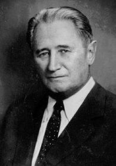
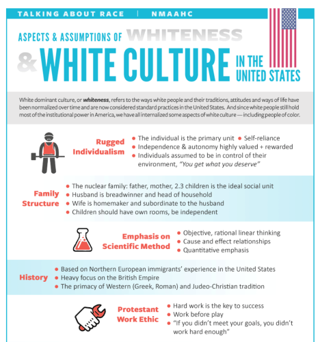
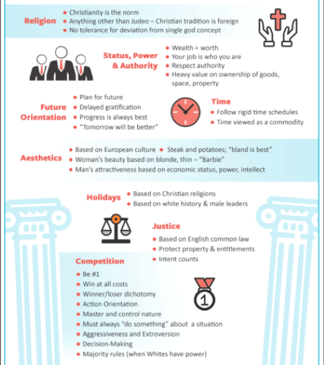

Diversity, Equity, and Inclusion
Critical legal theory and critical race theory make the claim that all American laws and institutions are designed to put up economic, academic, political and social barriers for all nonwhite races to ensure white supremacy. Critical race theory goes so far as to say that this institutional racism or "systemic racism" is the sole reason for all crime and poverty thereby relinquishing personal agency and culpability for criminal behavior from individuals. And because American law is designed to oppress all nonwhites, neutrality (color blindness) and objectivity (scientific method and logic) are myths. Therefore "equality of outcome," or equity, is a more accurate measure of society since it utilizes "lived realities" and "storytelling" as gauges of truth instead of history, objectivity, and logic.
After receiving public backlash nationwide, academia has renamed critical race theory "diversity, equity, and inclusion (DEI)" to conceal its teaching of the tenets of critical race theory in schools and colleges from parents and lawmakers. (Here's a real example of required reading steeped in critical race theory in a college English class without ever overtly stating "critical race theory" anywhere in the text.) Contrary to its official title (DEI), this style of pedagogy stifles intellectual diversity and inclusion in classrooms. First, it creates a hostile environment for students (and faculty) presenting opposing arguments regarding critical race theory or pointing out its myriad logical fallacies. Students (and faculty) very often suffer retaliation for expressing opposing ideas. Second, it discriminates against whites and males, but white males especially (as in the "example" provided above). This circumvents and undermines protections guaranteed in the Civil Rights Act and the Equal Protection Clause of the Fourteenth Amendment of the U.S. Constitution.
Nahum Goldman (pictured below), another Frankfurt School affiliate, articulated the concept of a "new world order" in his book entitled, Der Geist des Militarismus (English translation: The Spirit of Militarism, 1915). Compare Goldman's statements (below) with what is currently happening in American society. The Smithsonian's exhibit (below) on white culture is another manifestation of this cultural revolution.

"The historical mission of our world revolution is to rearrange a new culture of humanity to replace the previous social system. This conversion and re-organization of global society requires two essential steps: firstly, the destruction of the old established order, secondly, design and imposition of the new order. The first stage requires elimination of all frontier borders, nationhood and culture, public policy ethical barriers and social definitions, only then can the destroyed old system elements be replaced by the imposed system elements of our new order. The first task of our world revolution is Destruction.
"All social strata and social formations created by traditional society must be annihilated, individual men and women must be uprooted from their ancestral environment, torn out of their native milieus, no tradition of any type shall be permitted to remain as sacrosanct, traditional social norms must only be viewed as a disease to be eradicated, the ruling dictum of the new order is; nothing is good so everything must be criticized and abolished, everything that was, must be gone.
"The general masses will have been first persuaded to join as equals in the first task of destroying their own traditional society and economic culture, but then the new order must be forcibly established through people again being divided and differentiated only in accordance with the new pyramidal hierarchical system of our imposed global monolithic new world order." --Nahum Goldmann (1895-1982), Frankfurt School affiliate
Smithsonian Museum’s "Aspects & Assumptions of Whiteness & White Culture in the United States" Exhibit
Historically, after the Civil War ended slavery, the Compromise of 1877 led to the withdrawal of Northern troops from the Deep South. Thereafter Jim Crow laws were instituted in the Deep South that led to segregation and economic disparities. But Martin Luther King, John F. Kennedy and the Civil Rights Act of 1964 (Lyndon Johnson signed the Act into law June 2, 1964) ended segregation and Jim Crow laws in the Deep South. Currently, arguments for the existence of pervasive systemic racism include high incarceration rates for nonwhites, lack of access to healthcare and housing, high dropout rates among inner city school systems, and income disparities as proof of continued systemic racism. At the same time, critical race theorists disparage hard work, cause and effect relationships, work before play, and objective, rational, linear thinking saying these are attributes of "white dominant culture," or "whiteness." The Smithsonian's "White Culture" exhibit is a prime example.
